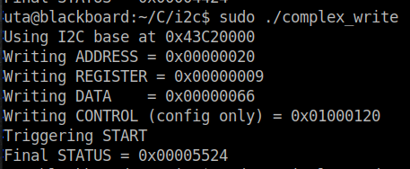
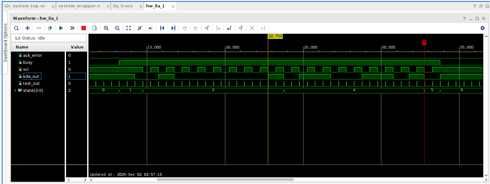
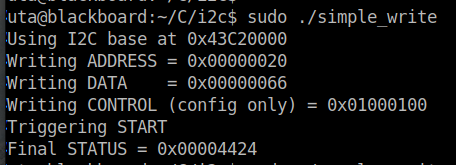
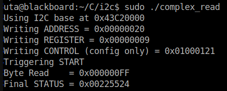
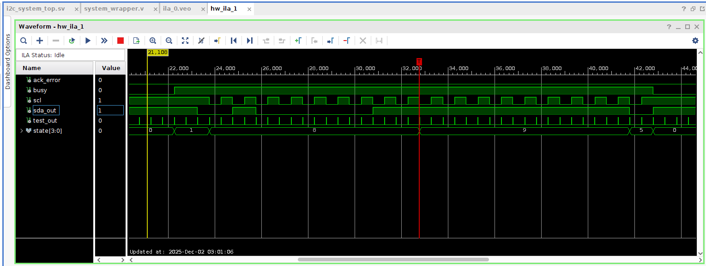
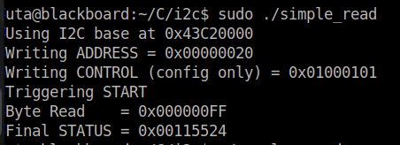
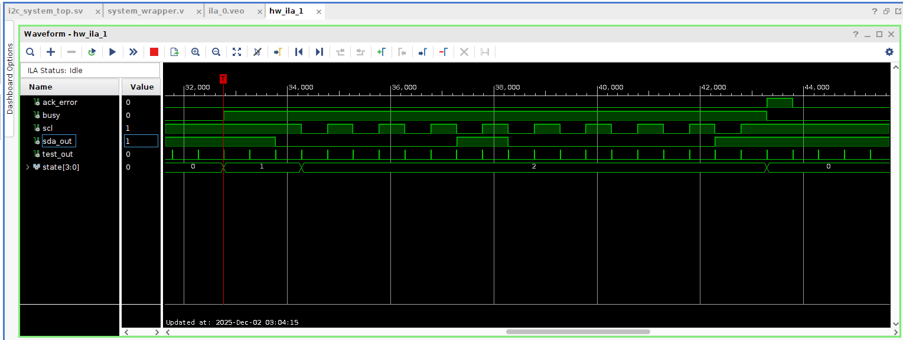
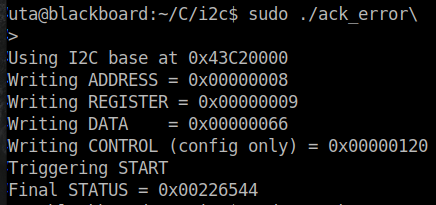

This project implements a custom I2C master peripheral on a Blackboard FPGA and
exposes the peripheral to the hard-processor subsystem via an AXI4-Lite memory-mapped interface.
A companion Linux kernel module exposes control and status through a sysfs interface, enabling
user-space and kernel-space interactions with the IP. The hardware uses an FSM-driven master,
independent TX/RX FIFOs, and a 200 kHz clock-enable timing reference routed to a PMOD connector.
The design was exercised with C test programs and kernel-module driven tests to verify the
peripheral logic and software integration.
The submission includes RTL for the I2C IP,
the AXI4-Lite glue, user-space test programs,
and the Linux kernel module source that exposes
/sys/kernel/i2c/ and /sys/kernel/i2c_expander/.
All files are provided in the downloadable archive
below and are available on my GitHub:
David Denny SoC Project Code
The hardware implements a master-only I2C FSM capable of communicating with multiple
7-bit devices at the specified timing. The module maps five 32-bit registers over an AXI4-Lite bus
to control operation: control, status, address, register, byte count, and data FIFO access. A test-out
signal provides the 200 kHz clock-enable for external observation via a PMOD pin, and the physical
SDA/SCL are also routed to the PMOD for peripheral connection and oscilloscope probing. Below is a
description of the register mapping, with an initial memory offset of 0x43C20000:
I2C Register Map:
| Register | Offset | Access | Bits | Field | Description |
|---|---|---|---|---|---|
| ADDRESS | 0x00 | R/W | 6:0 | ADDRESS | 7-bit I2C device address |
| REGISTER | 0x04 | R/W | 7:0 | REGISTER | 8-bit internal register index |
| DATA | 0x08 | R/W | 7:0 | DATA | Write: pushes data to TX FIFO Read: pops data from RX FIFO |
| STATUS | 0x0C | R/W1C | 0 | RXFO | RX FIFO overflow (write 1 to clear) |
| 1 | RXFF | RX FIFO full | |||
| 2 | RXFE | RX FIFO empty | |||
| 3 | TXFO | TX FIFO overflow (write 1 to clear) | |||
| 4 | TXFF | TX FIFO full | |||
| 5 | TXFE | TX FIFO empty | |||
| 6 | ACK_ERROR | ACK failure occurred (write 1 to clear) | |||
| 7 | BUSY | Module is actively transmitting or receiving | |||
| 31:8 | DEBUG_IN | Debug inputs (FSM probe / test signals) | |||
| CONTROL | 0x10 | R/W | 0 | R/~W | Direction: 1 = Read, 0 = Write |
| 4:1 | BYTE_COUNT | Number of bytes to transfer | |||
| 5 | USE_REGISTER | Send REGISTER byte after address | |||
| 6 | USE_REPEATED_START | 1 = Use repeated start; 0 = Stop then start | |||
| 7 | START | Set to 1 to begin an I2C transaction | |||
| 8 | TEST_OUT | Enable test output signals | |||
| 23:9 | RESERVED | Reserved | |||
| 31:24 | DEBUG_OUT | Debug outputs (can drive LEDs or GPO) |
Clock Divider / Timing: A 200 kHz clock-enable drives bit transitions and allows SDA and SCL
changes on separated edges. This 200kHz signal enables I2C communication at 100kHz.
TX / RX FIFOs: The TX and RX FIFOs are 8-bit wide and 16 deep, and used to facilitate
writes (TX) and reads (RX) from the Linux Kernel. Status bits indicate full/empty and overflow
conditions (TXFF/TXFE/TXFO, RXFF/RXFE/RXFO). Writes to the DATA register enqueue TX bytes, and
reads dequeue RX bytes. FIFO reset and status-clear semantics are supported.
Byte Transfer Semantics: The FSM follows I2C conventions: START, address + R/W,
optional register byte (use_register), data bytes from TX_FIFO, ACK checking (ack_error), and
STOP. For reads, the FSM issues repeated starts as required and places received bytes into
the RX_FIFO for host reads.
A set of user-space C programs exercise typical transactions (complex_write, simple_write,
complex_read, simple_read, ack_error) by writing the appropriate registers over /dev/mem. These
programs demonstrate the peripheral's control flow, and kernel-module wrappers provide the same
functionality through sysfs entries (e.g. /sys/kernel/i2c/start, /sys/kernel/i2c/tx_data, etc.).
ILA captures consistently show correct SDA/SCL toggling, FSM state transitions, Busy, and Error
signaling. Below are the resulting ILA waveforms from those tests of the I2C peripheral:
Complex Write:


Simple Write:

Complex Read:

Simple Read:

Ack Error:

The project delivered a fully instrumented I2C master IP integrated with an AXI4-Lite control
interface and a Linux kernel module exposing sysfs controls. RTL behavior for the FSM and FIFO logic
was validated with ILA captures and software tests, and the kernel module correctly triggers
peripheral actions via sysfs. Overall, the project strengthened my skills in FPGA IP design,
AXI interfacing, embedded software, Linux kernel modules, and SoC-level debugging.